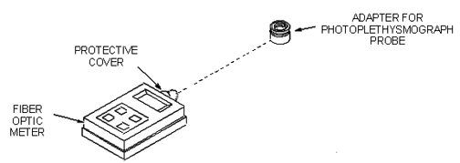
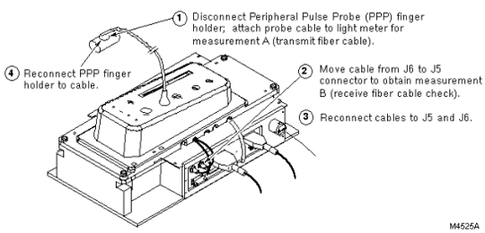

Operating Documentation
Direction 5133315-3, Rev# 14
Signa EXCITE HD 1.5T Service Methods
Module Version 1.0, Version Date 5/3/07
Operating Documentation |
| Required Persons | Preliminary Reqs | Procedure | Finalization |
|---|---|---|---|
| 1 | 30 mins |
| Item | Qty | Effectivity | Part# | Manufacturer | |
|---|---|---|---|---|---|
| Fiber-Optic Light Meter Kit with Interface Cables and Couplers | 1 | - | 46-317830G1 | - | |
This procedure is used to verify the standard Peripheral Pulse Probe is functioning correctly.
Connect the Peripheral Pulse Probe to the Physical Acquisition Controller (PAC) Assembly. The PAC is located on the lower-left side on the front of the magnet enclosure.
To perform this test, place the probe on your fingertip.
The Peripheral Pulse bar graph on the PAC (or Magnet Enclosure Display for MR/i and CV/i) should display your pulse; if not, check whether the probe is making contact with your finger. If the bar graph does not display your pulse, either the probe or PAC hardware is failing.
This procedure is used to verify the Fiber-Optic Peripheral Pulse Probe is functioning correctly.
Attach the photoplethysmograph adapter, 46-320710G1, to fiber-optic power meter to interface the meter to the fiber-optic photoplethysmograph probe. See Illustration 1.
Illustration 1: FIBER-OPTIC MEASUREMENT CONFIGURATION

Set the meter to measure in µW/cm2 and adjust the wavelength to 820nm.
Attach the fiber-optic photoplethysmograph probe to the meter. See Illustration 2, step 1. Measure and record the light power output (measurement A) from the probe.
Illustration 2: FIBER-OPTIC MEASUREMENT A AND B STEPS

Reverse the fiber-optic photoplethysmograph probe connections J5 & J6 on the PAC I/F so the second fiber optic bundle (the normal receive cable) is now transmitting light. Illustration 2, step 2. Measure and record the light power output (measurement B) from the probe.
Reconnect cables J5 and J6 to correct connections at the PAC I/F; reconnect the photoplethysmograph probe finger holder to the cable. See Illustration 2, steps Step 3 and Step 4.
If the light power output is < 150 µW/cm2 for Measurement A or B, then there is a problem with the fiber-optic photoplethysmograph probe cable or the PAC. Since the FRU1 is the entire PAC assembly with cables, there is no need to further isolate the problem; replace the PAC Assembly.
Finally, if the power output level was OK, attach the probe to your fingertip and verify the bar graph display on the PAC is pulsing. The PAC may require up to 45 seconds to auto-gain the signal to a usable level.
Restore the system to patient scanning condition.
Do a check scan to insure proper operation.